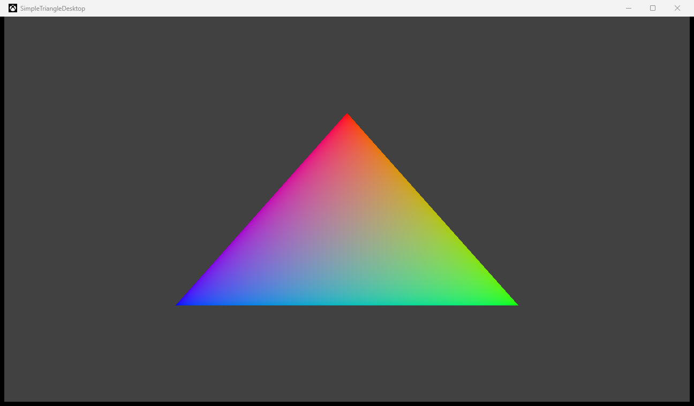

PercyScarlett
Clean-room Rust Xbox Series X|S (Scarlett) translation layer, GDK shim suite & SM 6.6 DXIL shader recompiler for Windows x64 — built for TheBig6 😉.
fail=0)cdylib shim DLLs (0 warnings)LoadLibraryW)How PercyScarlett Compares Against Other Efforts
Based on verifiable public metrics from each repository and PortWatchVI:
| Capability | PercyScarlett v0.3.1 (Ours) | Leonida | xvalkyrie | XCL / xbox-emulator |
|---|---|---|---|---|
| Language & Architecture | Pure Rust, 9 cdylib shims + Xbox GUI | C++ / Python static recomp (Vulkan) | Translation layer | Rust runtime / Wine-style |
| Hardware GPU Bring-Up | 6/6 unmodified Scarlett GDKX samples booted + D3D12 compute reference tests bit-exact | 60-frame Vulkan test; d3d12_xs command list & descriptors still TODO | Boots Minecraft / XDefiant / Fortnite | Partial |
| TheBig6 😉 RDNA2 Shaders | Strict (fails on unknown): 489/500 (97.8%) DXIL; 3,060/21,522 full corpus (VS 1,345 / PS 8,710 / CS 3,905 / Mesh 7,498 / RT 64) | 26,503 SPIR-V (spirv-val + 30-GPU test) | Xbox One/Series runtime | 24,064 HLSL / ~35% VS |
| PE32+ Loader & C++ EH/TLS | .reloc, sanitized .pdata, RtlPcToFileHeader redirect, static .tls (gs:[0x58]), --dry-run | .pdata, RtlPcToFileHeader, tls_host.dll | PE loader | Basic |
| Shipped Sidecars & Audio | 6/6 Win11 live-loaded + XAudio2Create + 0 GB NTFS overlay | Offline extractors (no 0 GB overlay) | Runtime | Live / Standard |
| Community Verification | 8/8 1-Click Self-Test + Pre-Filled GitHub Issue Reporter (.exe & .bat) | Manual CLI scripts | Manual | Manual |
Proof 1 — Strict RDNA2 → SM 6.6 DXIL & Hardware GPU Compute Reference
Zero silent fallbacks: lift_to_hlsl_strict fails on any unrecognized instruction. Real RDNA2 compute programs (ALU + s_cbranch_scc1 loops) compile to SM 6.6 DXIL via dxcompiler.dll, dispatch on real D3D12 GPU hardware (compute_exec.rs), and match CPU reference bit-for-bit:
PS09 Shaders (full corpus): total=21522, strict_lifted=3060/21522 (14.2%) in 13.55s Stages: VS=1345 PS=8710 CS=3905 Mesh=7498 RT=64 DXIL SM 6.6 (dxcompiler.dll, --limit 500): ok=489/500 (97.8%), fail=11 test compute_exec::tests::executes_lifted_rdna2_compute_shader_on_hardware_gpu_and_matches_reference ... ok test compute_exec::tests::executes_rdna2_loop_with_sopp_branch_on_hardware_gpu ... ok
Proof 2 — 6/6 Scarlett GDKX Samples + Live Rendered SimpleTriangleDesktop.exe
Unmodified Microsoft Scarlett GDKX & GDK sample executables mapped in-process via percyscarlett run (with DeviceXProxy x64 vtable forwarders, DxgiDeviceProxy, XSystemGetDeviceType() = 7 Xbox Series X, XGameRuntimeInitialize, and GetModuleFileNameW/GetModuleHandleW IAT virtualization) rendering live on Windows 11 (RTX 2060 SUPER):
SimpleCompute_GDKX.exe: BOOTED & RUNNING SimpleTriangle_GDKX.exe: BOOTED & RUNNING SimpleLighting_GDKX.exe: BOOTED & RUNNING SimpleTexture_GDKX.exe: BOOTED & RUNNING SimpleBezier_GDKX.exe: BOOTED & RUNNING SimpleInstancing_GDKX.exe: BOOTED & RUNNING SimpleTriangleDesktop.exe: 1296x759 D3D12 triangle rendered live (0 crashes)

Proof 3 — Shipped Xbox Sidecar DLLs, System Tray (-headless) & 27/27 Workspace Tests
[PASS] amd_fidelityfx_loader_xbox.dll loaded at 0x7ffd2e170000 [PASS] amd_fidelityfx_upscaler_xbox.dll loaded at 0x7ffcdf570000 [PASS] Bink2Scarlett.dll loaded at 0x7ffcdf5f0000 [PASS] libHttpClient.GDK.dll loaded at 0x7ffcdf540000 [PASS] XboxBvhBuilder.dll loaded at 0x7ffcdf5d0000 [PASS] XCurl.dll loaded at 0x7ffcdf680000 DLL verification: 6 passed, 0 failed
9 Compiled Shim DLLs: kernelx.dll, d3d12_xs.dll, xmem.dll, xgameruntime.dll, dstorage.dll, GameInput.dll, xg_xs.dll, winrt_xs.dll, xaudio2_9.dll — View Source on GitHub